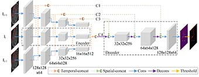
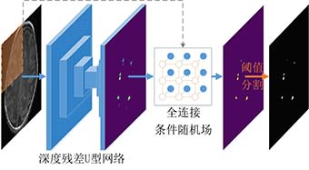

News
10/2019: One paper was submitted to ISBI2020 (TS CNN).
09/2019: 2019 National Scholarship for Master, Xidian University
06/2019: One paper got accepted by Journal of Computer Applications (Here).
05/2019: One paper got accepted by MICCAI2019 (RS R-CNN)
04/2019: One paper got accepted by CCML2019 (Here).
09/2018: First-Class Graduate Scholarship, Xidian University .
09/2018: The National Third Prize in The 3th China College Students' Internet plus Innovation and Entrepreneurship Competition.
04/2018: 2018 Data Science Bowl, Kaggle, Rating: 347/3634 top 10%.
09/2017: I started my Master life at Xidian University.
06/2017: Outstanding Student, Lanzhou Jiaotong University.
10/2015: The National Second Price in 2015 National Undergraduate Electronics Design Contest.
10/2014: First-Class Undergraduate Scholarship, Lanzhou Jiaotong University.
09/2013: I started my Bachelor life at Lanzhou Jiaotong University.
Publications
|  | Yalong Liu, Jie Li, Miaomiao Wang, Zhicheng Jiao, Jian Yang, and Xianjun Li Paper (Submitted to ISBI2020) |
 |
Yalong Liu, Jie Li, Ying Wang, Miaomiao Wang, Xianjun Li, Zhicheng Jiao, Xingbo Gao Paper (Accepted by MICCAI2019) |

|  | Yalong Liu, Jie Li, Yin Wang, Saifei Wu, and Pei Zou Paper (Accepted by CCML2019, then be transfered to Journal of Computer Applications(China)) |
Contact
Copyright © 2019.YalongLiu All rights reserved.